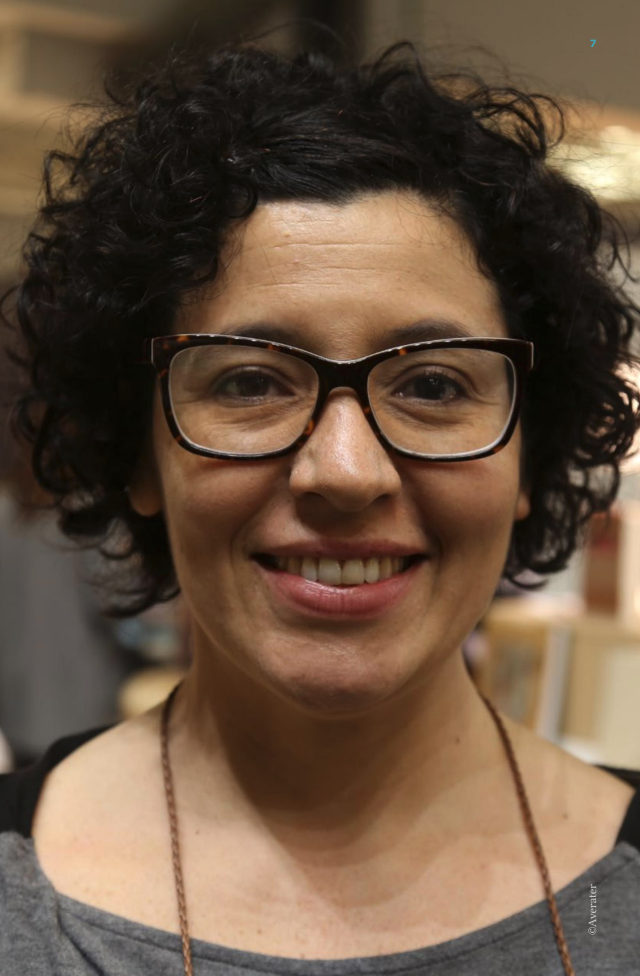

Fluidez e rigor na aventura da linguagem
Um panorama sobre os caminhos múltiplos de uma das autoras mais originais da literatura brasileira contemporânea
Estreou no romance em 2011 com Os Malaquias, obra que rendeu a ela o prestigioso Prêmio Literário José Saramago. Seguiu no gênero com As miniaturas (2013) e A pediatra (2021), livro que conquistou um espaço importante com a crítica e os leitores. Também lançou obras infantis e juvenis e publicou crônicas e textos de opinião em sites, blogs e revistas digitais, como a Escritoras Suicidas, onde escreveu de 2005 a 2008. Seus livros foram traduzidos e publicados em diversos países, como Alemanha, Itália, França, Israel, Romênia, Suécia, Portugal e Argentina.
Os Malaquias, a autora costuma contar, resultou de um longo processo que também foi uma travessia pessoal. Anos se passaram entre ideia, escrita, abandono, reencontro, edição, publicação. "Cada vez que escrevia uma página, era tomada por uma eletricidade, inventar um passado de cujo presente faço parte. Da cena real, a tempestade, eu inventaria o segredo dos sobreviventes", diz Andréa em um texto sobre os bastidores da obra. "Essa sanfona emocional, claro, não me parece o melhor estado na produção de um romance, produto digno de uma disciplina racional, de um cálculo estético, ou seja, de controle", completa.
A pediatra, por sua vez, foi escrito em apenas um mês, após um processo imersivo de pesquisa que sempre precede os mergulhos narrativos da autora. "O ato de escrita é praticamente o ato final do livro, da criação, as coisas vão fermentando, o repertório de leitura, o repertório próprio existencial, as coisas vão se sedimentando", afirmou Andréa em entrevista ao podcast da Página Cinco. A narrativa seduz os leitores pela linguagem, navegando pela mente de uma protagonista ácida, Cecília, uma pediatra que odeia crianças e tem uma relação em muitos sentidos problemática com as pessoas ao seu redor. Andréa conta que a personagem é referenciada na figura de uma vilã de novela que se expressa livre de vigilância, revelando sem filtros sua personalidade perversa.
Nesse prolífico, variado e consistente caminho literário, Andréa cultiva uma curiosidade notável pelos universos que cada obra abre a ela - seja pela vida própria que os personagens ganham, escapando ao controle de quem os criou, seja pelo movimento autônomo da própria linguagem, dos encontros e desencontros entre o tom intencionado pela autora e a poética que se revela inerente à história. "Você vai seguindo a lógica interna daquela própria frase, se deixa levar pela linguagem", declarou Andréa. Essa abertura à experimentação é equilibrada com um cuidado rigoroso na construção de suas narrativas, compondo um mosaico de qualidades literárias que indica que ela está apenas começando.
A literatura mapeia a angústia como ninguém.